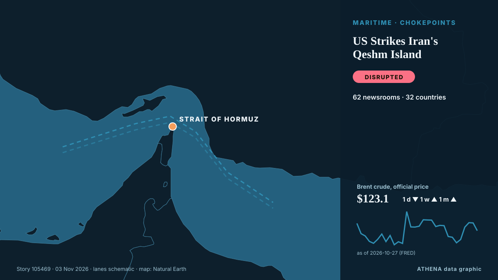

ATHENA Glaux Intelligences — Global news intelligence — every number explained
World news, checked across countries
ATHENA Glaux follows hundreds of news outlets around the world and groups their reports into events. For every event you see how many outlets in how many countries reported it, who was first, and a risk score with its reasons — updated every 15 minutes, in seven languages.
Live from the newsTenerife striker Jesús de Miguel dies aged 30 after on-field collision34 outlets · 20 countries · Risk 5.7 · Sources: CNA (Channel NewsAsia), Sydney Morning Herald

GeopoliticsUS Strikes Iran's Qeshm Island
The Wall Street Journal reported the attack, describing it as the latest of a series of limited strikes Washington has secretly carried out against Iran in recent weeks. from Free Malaysia Today
The top 10 things to watch for in the US midterm elections
And what it could all mean for New Zealand. from RNZ National
US delivery of 500 Patriot missiles to Ukraine will span 3 years starting in 2030
NATO Supreme Allied Commander Europe General Alexus Grynkewich said the United States continues to supply Ukraine with Patriot interceptor missiles, as well as weapons packages paid for by European… from Ukrinform (English)

Today in numbers
| 12:00 | 942 |
|---|---|
| 13:00 | 787 |
| 14:00 | 899 |
| 15:00 | 791 |
| 16:00 | 936 |
| 17:00 | 879 |
| 18:00 | 497 |
| 19:00 | 649 |
| 20:00 | 413 |
| 21:00 | 437 |
| 22:00 | 416 |
| 23:00 | 462 |
| 00:00 | 425 |
| 01:00 | 328 |
| 02:00 | 357 |
| 03:00 | 283 |
| 04:00 | 411 |
| 05:00 | 588 |
| 06:00 | 610 |
| 07:00 | 488 |
| 08:00 | 540 |
| 09:00 | 1949 |
| 10:00 | 690 |
| 11:00 | 898 |
Risk of today's events
Oleshky ceasefire expires, Ukraine evacuates civilians from parts of Kherson region
Nov 1 - Ukraine's military said it evacuated 167 people from threatened areas of southern Kherson region on Sunday as a temporary local ceasefire expired — two days after buses carried residents out… from The Straits Times
UK PM Burnham says he is ‘open’ to formal apology for slavery, but rules out reparations
At least 12.5 million Africans were abducted and sold into slavery. from Express Tribune
Bangladesh Garment Workers Stage Fourth Day of Wage Protests
Clashes were reported across industrial belts around Dhaka, including Ashulia, Gazipur and the capital's Mirpur area, as workers staged fresh demonstrations and attempted to block major highways. from CNA (Channel NewsAsia)
Most widely covered
- Economy & Markets
Binance clients pull $4.7 billion after hack as crypto world studies fallout
51 countries · 115 outlets - Geopolitics
Netanyahu's Likud weighs refusing to recognize election results
51 countries · 131 outlets
Emerging signals
- Sudden surge · Active nowUS-Iran
- Sudden surge · Active nowQeshm Island
- New name in the news · Active nowKomyshuvakha
- Sudden surge · Active nowAgoa
- Sudden surge · Active nowQeshm
Official warnings
- Red notification for tropical cyclone FOUR-26. Population affected by Category 1 (120 km/h) wind speeds or higher is 1.156 million .Red · GDACS ·
- Cyber chief: UK facing AI-powered attacks on critical infrastructure within two yearsadvisory · UK National Cyber Security Centre ·
- M 6.0 - 165 km NW of Port-Olry, VanuatuM6.0 · USGS ·
- M 6.2 - 43 km ESE of Port-Olry, VanuatuM6.2 · USGS ·
- M 6.0 - 214 km NW of Port-Olry, VanuatuM6.0 · USGS ·
Get ATHENA on Telegram
Join the free ATHENA Glaux group and receive the news the moment it is published here:
- breaking events with a risk of 6 or more
- an hourly round-up of the top events
- risk-tracker updates (Hormuz, Red Sea, Taiwan, sanctions and more)
- the daily briefing every morning at 10:00 (Athens time)
- a weekly outlook
- official warnings, emerging signals and rising risks
Tap the button, Telegram opens, press Join. Posts are in English; you can mute or leave at any time. No Telegram yet? It is free at telegram.org.
Risk trackers
More ›Global risk outlook — week 45, 2026 (2–8 Nov) ›
Geopolitics, Politics & Security
More ›Urgent: U.S. to host trilateral talks with Russia, Ukraine in Abu Dhabi on Nov. 10-11, says Witkoff
The United States will bring together delegations from Ukraine and Russia in Abu Dhabi on November 10-11 to discuss ending Russia's conflict with Ukraine, post-conflict security agreements and… from CGTN (World)
- Elections & politics
LGE 2026 | Rigging claims and anti-migrant posts raise fears of polling station clashes
- Defence & national security
Indian Navy Rescues 20 Crew Members From Hijacked Iranian Vessel off Somalia
- Elections & politics
Kremlin responds to Tokayev's proposal for Russia to join Organization of Turkic States
- Wars & conflicts
Russian strike on Kharkiv hospital raises injury toll to 73
Economics, Finance & Markets
More ›Greenback pulls back ahead of US midterms; Bitcoin stabilises after crypto heist
The American currency is down 0.5% against a basket of other major currencies. from The Business Times
- Jobs & wages
Virgin Media O2 cutting thousands of jobs in cost savings overhaul
- Growth & indicators
Hong Kong Q3 GDP expands by 5.2% year-on-year, outlook positive
- Debt & budgets
PM’s Commonwealth ‘debt reset’ plan after opening door to slavery apology
- Shares & market moves
'Fuel of the poor' LPG soars in Pakistan, forcing rickshaw drivers to cut meals
Trade, Industry & Infrastructure
More ›Poland Deploys Counterterrorism Police Near Russia Border
Poland has deployed additional police, including counterterrorism units, in the Warmian-Masurian and Podlaskie regions after receiving warnings of possible sabotage near the Russian exclave of… from Kyiv Post
- Aviation, rail & road
Heathrow flight with 181 passengers diverted after reported bomb threat
- Aviation, rail & road
Türkiye, Kazakhstan target $15B in bilateral trade
- Trade & trade deals
Trump to remove Rwanda and South Africa from US trade deal
- Shipping & ports
11 tankers caught fire in Hormuz in 9 days: IRGC Navy
Energy, Resources & Environment
More ›‘Mogging’ named Collins Dictionary’s Word of Year for 2026
Slang term refers to outshining or outperforming someone or something. from Anadolu Agency (English)
- Oil & gas
Aramco exploring expansion of East-West Pipeline that avoids Hormuz
- Extreme weather & natural disasters
Cyclone Murasu makes landfall, heavy rains batter Andhra coasts
- Oil & gas
Two Yaroslavl oil refinery staffers injured in Ukrainian drone attack — governor
- Oil & gas
Oil edges up after report of US strike on Iran's Qeshm Island
Technology, AI & Cybersecurity
More ›Supermarket freezers in several European countries hit by apparent cyberattacks
Supermarkets in Sweden, Belgium, Luxembourg, Ireland and Estonia were hit Monday by problems with freezers and fridges that apparently were caused by cyberattacks, forcing some to dispose of ruined… from The Canadian Press (via CityNews)
- Media & disinformation
Africa: Six in Seven Journalist Murders Go Unpunished, Unesco Reports
- Cybersecurity
Hackers hit Ukraine, Russia's emergency apps, send fake nuclear, chemical attack alerts
- Cybersecurity
Fridge cyberattack on supermarkets across Europe prompts EU warning
- Cybersecurity
Caught cold: fridge cyberattack highlights internet gadget weaknesses
Business, Companies & Investment
More ›Hypersonic missile being made by British-German startup ‘could strike deep inside Russia’
It comes as part of a UK-German defense parnership signed by former defence secretary John Healey in 2024. from The Independent
- Investment & capex
Tanzania eyes global energy conquest using 2026 ADIPEC to lure foreign capital
- Corporate strategy
Aramco’s Q3 net profit jumps 34.5% to $36.3bn
- Bankruptcies & restructuring
German auto supplier Schaeffler to cut 3,460 jobs in Europe amid automotive crisis
- Corporate strategy
Google disrupts million-device XCPE Android malware botnet, bans TV box maker
Health, Science & Research
More ›US approves cheap version of HIV prevention shot
The approval was granted under the US FDA's President's Emergency Plan for AIDS Relief (PEPFAR) program, Dr. from Channels TV
- Research & funding
EU and UK set to offer each other local university tuition fees
- Space science & physics
Rare 4.1-billion-year-old Martian meteorite reveals clues to planet's ancient past
- Pharma & biotech
Dutch police offer £1.6m reward for help finding cocaine kingpin on the run
- Outbreaks & public health
New York state reports first measles-linked child death in over 30 years amid outbreak
Society, Law & Public Policy
More ›Tenerife striker Jesús de Miguel dies aged 30 after on-field collision
By Domprey Amewornu Davidson Spanish football club CD Tenerife has confirmed the death of striker Jesús de Miguel, who passed away on Tuesday morning after suffering a serious injury during the… from GBC Ghana Online
- Protests & public opinion
Iran hangs two men over involvement in killing police officers
- Courts & justice
Trump asks Supreme Court to sideline 20,000 California mail ballots
- Accidents & emergencies
Indian national killed after 2 helicopters collide in Nepal's Mount Everest region
- Crime & corruption
Boy, 14, hands himself in to police after Bradley Lowery used in sickening taunt in Coventry vs Sunderland
Sport
More ›AFC Postpones 2027 Asian Cup in Saudi Arabia Amid Regional Security Concerns
RIYADH, Nov 3: The Asian Football Confederation (AFC) has postponed the 2027 AFC Asian Cup in Saudi Arabia by nearly a year, citing exceptional regional circumstances, logistical d... from Arab Times
Culture, People & Lifestyle
More ›‘The Remarried Empress’ Gets Surprise Early Premiere On Disney+/Hulu
'The Remarried Empress,' starring Shin Mina, Ju Jihoon, Lee Jongsuk and Lee Seyoung, will debut November 3 on Disney+ and Hulu, a day ahead of schedule. from Forbes Business